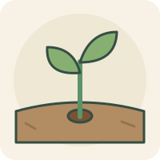

पुस्तक 02 / भाग 04
पठन और अभिव्यक्ति
Reading & expression
भाग 04 · PHASE 4
पठन और अभिव्यक्ति
कहानी, कविता, अनुच्छेद, पत्र और अंतिम अभ्यास।
Reading & expression
 31
31समानार्थी और विपरीत शब्द
Synonyms and antonyms2 पाठ · 1 कार्यपत्रक
पढ़ें → 32
32अव्यय और वाक्य जोड़ना
Connectives2 पाठ · 1 कार्यपत्रक
पढ़ें →33विराम चिह्न और संवाद लेखन
Punctuation and dialogue2 पाठ · 1 कार्यपत्रक
पढ़ें → 34
34पठन-बोध: सूचनाएँ
Reading notices2 पाठ · 1 कार्यपत्रक
पढ़ें →
35पठन-बोध: कहानी
Reading a story2 पाठ · 1 कार्यपत्रक
पढ़ें → 36
36कविता और भाषा
Poetry2 पाठ · 1 कार्यपत्रक
पढ़ें →37अनुच्छेद लेखन
Paragraph writing2 पाठ · 1 कार्यपत्रक
पढ़ें →38पत्र और संदेश
Letters and messages2 पाठ · 1 कार्यपत्रक
पढ़ें → 39
39स्वतंत्र अभिव्यक्ति
Independent expression2 पाठ · 1 कार्यपत्रक
पढ़ें →40अंतिम अभ्यास और अगली किताब
Final review2 पाठ · 1 कार्यपत्रक
पढ़ें →